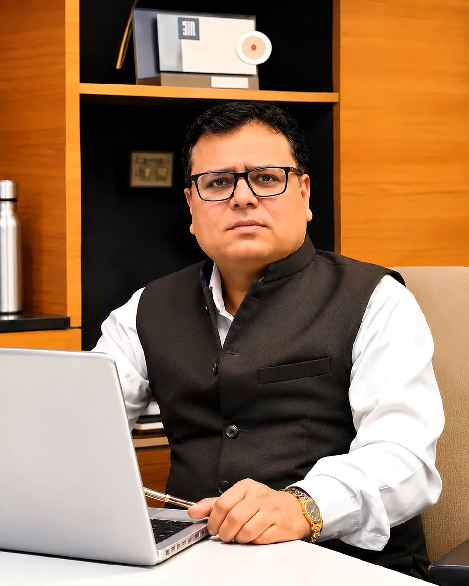
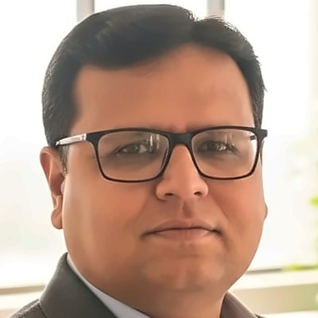

Dr. Lalit Kumar Wadhwa · Director – IQAC, Vishwakarma University, Pune
Helping universities with NAAC & NBA accreditation
Institution builder with 26+ years across two principalships, academic and innovation directorships and university-level quality assurance — taking institutions from establishment to accreditation and national ranking.

Highest among affiliated colleges — a CGPA of 3.74 on NAAC's 4-point scale, achieved during his principalship.
Led outcome-based education, CO–PO attainment and SAR preparation through to NBA accreditation as Principal.
Built the data systems and submissions that earned the institution a place in the NIRF national rankings.
From lecturer to Director – IQAC — the numbers, the journey and how he helps universities, in one short narrated film. Turn on CC for captions.
Dr. Lalit Kumar Wadhwa is an institution builder and academic leader with 26+ years of progressive experience in higher education — two principalships, academic and innovation directorships, and university-level quality assurance.
As Principal, he led his affiliated college to a NAAC CGPA of 3.74 on a 4-point scale — the highest among affiliated colleges — alongside NBA accreditation and an NIRF ranking. He serves as a Governing Body Member of SNBP University, Pune and an Academic Council Member of Alard University, Pune. He takes institutions from establishment to accreditation and national ranking through strategic planning, governance design, and accreditation and ranking strategy across NBA, NAAC, DASCA, NIRF, THE and QS. His deep command of NEP 2020 and outcome-based education is backed by an E&TC research foundation and a record of building research, innovation and entrepreneurship ecosystems.
Two principalships, three directorships, one focus — institutions whose quality systems keep working long after the peer-team visit.
Indian Institute of Technology (ISM), Dhanbad
Government College of Engineering (COEP), Pune
BNCOE, Pusad · Amravati University
From lecturer to Director – IQAC — each role added a layer: teaching, admissions, accreditation, principalship, innovation and quality systems.
Each one tested in real institutions — on SAR/SSR drafts, peer-team visits, ranking submissions and NEP rollouts.
Structured, hands-on support that helps a university strengthen its quality systems, earn stronger accreditation outcomes and move up in national and global rankings.
Institutional audit against NAAC, NBA, NIRF and ranking parameters to find gaps and quick wins.
A prioritised roadmap with KPIs, responsibilities and timelines, agreed with leadership.
Systems, policies, SOPs and documentation — plus training for IQAC teams, deans and faculty.
Data validation, submissions, nominations, mock visits and presentation readiness.
Periodic reviews and dashboards so every gain carries into the next cycle.
All areas of support — accreditation, rankings and quality systems guided end-to-end across academic years.
One clear goal — a NAAC cycle, an NBA programme, a NIRF or IIC submission, or an award.
Workshops, FDPs and leadership sessions for IQAC teams, deans and faculty.
Every engagement begins with a diagnostic meeting with university leadership to agree priorities, timelines and success measures.
Rate where your institution stands today in each area (0 = not started, 4 = mature & documented). The flower shows your shape — and where support would help most.
Wireless sensor networks, ZigBee, embedded systems, soft computing and applied machine learning — with citations growing sharply since 2024.
What the papers are about, who they were written with, and how the output has grown. Click a topic or a collaborator to filter the publication list below.
Resource person on leadership, NEP 2020 and AI tools; coordinator of 15+ IIT Bombay / IIT Kharagpur workshops through Remote Center RC1063.
The first step is a diagnostic conversation to agree the priorities and areas of support that matter most for your university.
